交流と理解の深化
- 各自の研究課題を通じて他の学生・教員と交流する場
- 異分野間のアナロジーや新しい視点が生まれやすい
- 参加は単位認定にかかわる — 十分に準備して臨む
「発見」の授業設計は、疑問力・仮説力・アブダクションを育てる授業づくりの場です。
Googleアカウントでログインしてください（研究室で承認されたアカウントのみ）。
Page revision · 20260802-presentation
まずはどうやって発見を形にしていくかを、制作事例とともに読み解きます。 そのうえで道具・表現・発見の3ステップで答え、この授業の疑問がはっきりしていく——それがこのビルダーの設計です。
Discovery Process
「発見」は、ひらめきだけで終わりません。既にある要素を組み合わせ、試し、形にしていくプロセスです。 以下はジェームズ・ヤングの枠組みと、学生時代の制作4事例を重ねた読み方です。
アイデアとは、既存の要素と既存の要素の新しい組み合わせ以外の何ものでもない。
— ジェームズ・ヤング『アイデアの作り方』（A Technique for Producing Ideas）より
同書で示される、5つの段階
当面の課題のための資料と、一般知識の収集
心の中でこれらの資料に手を加えること
意識の外で、何かが自ら組み合わせの仕事をやるのに任せること
ユーレカ！「見つけた！」「分かった！」— 無意識のうちに組み合わせが完了し、ひらめく瞬間
現実の用途に合致させるために、アイデアを展開・具体化させる段階
Thinking Loop
ただし実際には、段階は一直線ではなく、アイデアを材料にしてさらに新しいアイデアを作るループとして回ります。
↺ そしてさらにリサーチへ — 制作のたびにループが一周する
学生時代の制作4事例 — 組み合わせと具現化
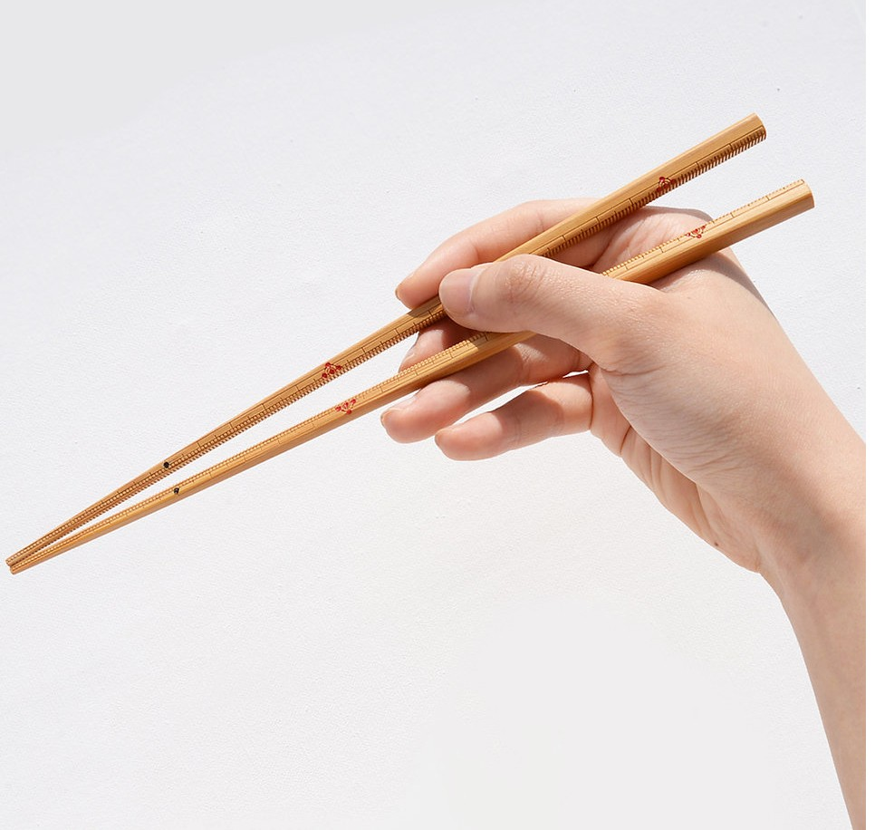
竹の定規 × 竹箸 × レーザーカット
竹の定規と竹箸を組み合わせたプロダクト（物差し）。レーザーカッターで竹に目盛りを正確に刻む技法を用い、単なる竹定規の再現にとどめず、内側の目盛りを箸の滑り止めとして機能させることでプロダクトとして完成させました。レーザー加工と伝統的な竹の技術の新しい組み合わせです。
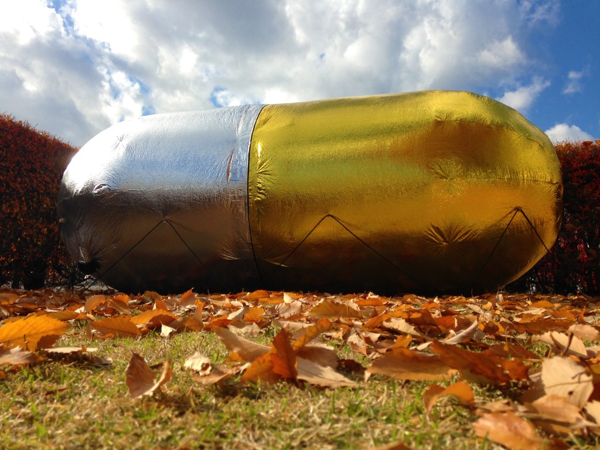
サバイバルシート × 送風 × 携帯住居
表面が金・裏面が銀の極薄サバイバルシートで、最小限の住居を試みた作品です。
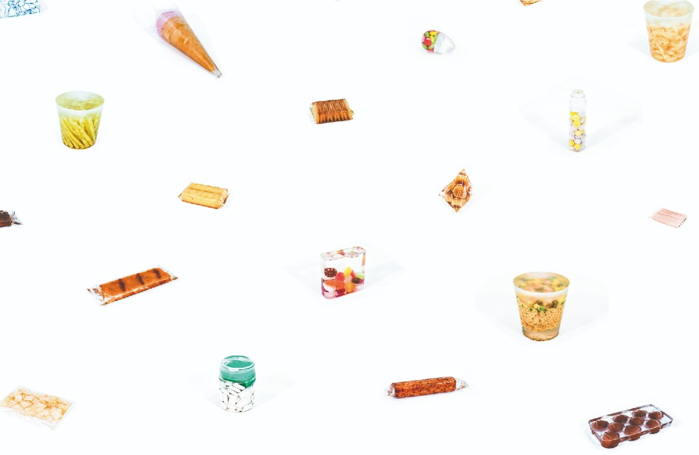
標本 × 二液性エポキシレジン × 日常の食品
「標本」という課題に対し、「日常の新しい見せ方」を提示するために制作。初めて二液性エポキシレジンの扱い方を学び、その何でも封入できる特性（アクリルほどの安定性はないものの）を活かしました。食品をパッケージを開ける前の状態で内部空間ごとレジンに封入し、取り出したときに見慣れた食品の新しい側面—結晶のような美しさ—を発見できるのではないか、という仮説のもと制作しています。
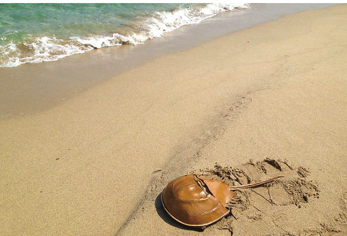
カブトガニの剥製 × カバン × レーザー彫刻（革）
「間（ま）」という一文字のテーマに対し、「カブトガニの剥製」と「カバン」の間にあるプロダクトとして制作。SASIと同様にレーザー彫刻で革を加工。グロテスクに見えうる裏面の足をグラフィックとして表現しつつ、表面はカブトガニの甲羅が持つ光沢を革に見立て、カバンとしての美しさに落とし込んでいます。
Research Seeds
アイデアを構想するための「考える材料」として、技術・素材・デザインの3領域から15の事例を紹介します。 それぞれが、既存の前提をどう書き換えているかに注目しながら読んでみてください。
01 · Cyan · Technology
工程や製造の前提を変えることで、デザインの射程そのものが広がる事例群です。
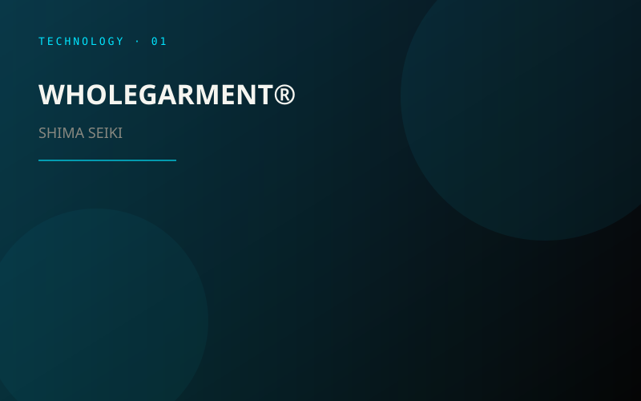
SHIMA SEIKI
SHIMA SEIKIが開発した、縫い目のないニット製品を一着丸ごと立体的に編み上げる技術です。通常の衣服では、生地を編む・裁断する・縫製するという複数の工程が必要ですが、WHOLEGARMENT®では、編機からほぼ完成形の衣服を直接つくることができます。
そのため裁断時に生じる生地のロスを抑えられるだけでなく、デジタル上で糸や編み構造、シルエットをシミュレーションしながら設計し、そのデータを生産へつなげることができます。いわば「服の3Dプリント」に近い発想です。UNIQLOもSHIMA SEIKIとの共同事業を通じてこの技術を導入し、「3D KNIT」として展開しています。
注目したいポイント：「生地をつくってから服にする」のではなく、最初から完成形を生成することを前提にデザインするという変化。
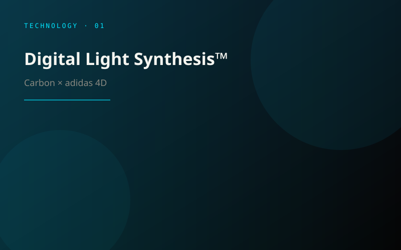
Carbon × adidas 4D
Carbonが開発したDigital Light Synthesis™は、光と酸素、液状樹脂を利用して立体を高速に形成するアディティブ・マニュファクチャリング技術です。adidasはこの技術を用い、複雑な格子構造を持つ「4D」ミッドソールを開発しています。
興味深いのは、単に靴底を3Dプリントしているのではなく、アスリートの走行データなどをもとに格子の構造そのものを設計している点です。4DFWDでは、膨大な候補となる格子構造から、荷重に応じて特定方向へ変形する形状を導き出しています。
注目したいポイント：素材の種類だけで性能を決めるのではなく、内部構造＝ジオメトリをデザインすることで硬さや反発などの機能をつくる。
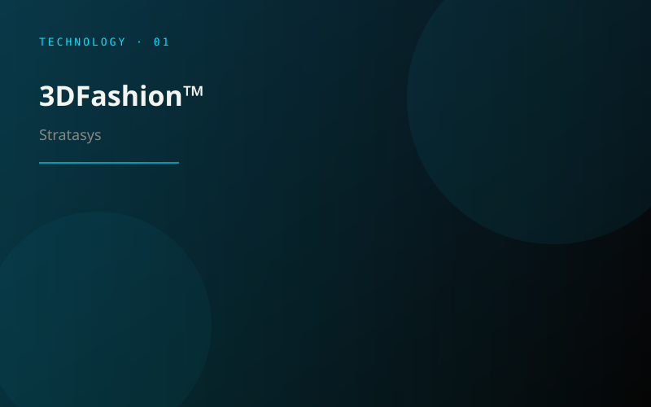
Stratasys
Stratasysの「3DFashion™」は、完成した布や衣服の表面へ直接3Dプリントできる技術です。J850 TechStyleでは、複数の材料、フルカラー、透明表現、立体的なテクスチャなどを布の上に直接形成することができます。
これまでの衣服では、「布をつくる」「プリントする」「装飾を付ける」といった工程が分かれていました。しかしこの技術では、柔らかいテキスタイルと硬質・半透明・立体的な造形を一つの表面上で連続的に扱うことができます。
注目したいポイント：「布」と「立体物」の境界をなくし、テキスタイルの表面そのものを三次元的な設計領域に変えている。
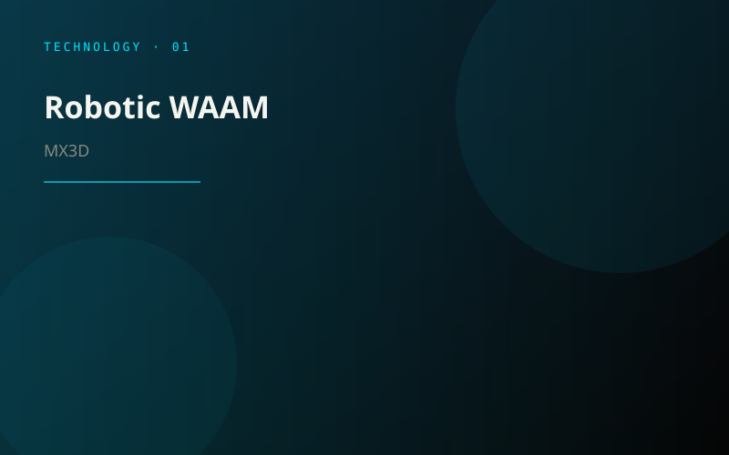
MX3D
WAAM（Wire Arc Additive Manufacturing）は、金属ワイヤーをアークで溶かしながら、産業用ロボットアームによって積層していく大型金属3Dプリント技術です。MX3Dでは、この技術を使って大型の金属部品を直接デジタルデータから製造しています。
鋳型をつくって鋳造したり、大きな材料から削り出したりする従来の方法とは異なり、必要な場所に金属そのものを「描く」ように積層できます。ロボットアームを使うことで、一般的な平面積層型3Dプリンタとは異なる方向から材料を配置できる点も特徴です。
注目したいポイント：金属加工を「削る・曲げる・鋳型に流す」ものから、空間の中へ材料を直接配置するデザインへ変える。
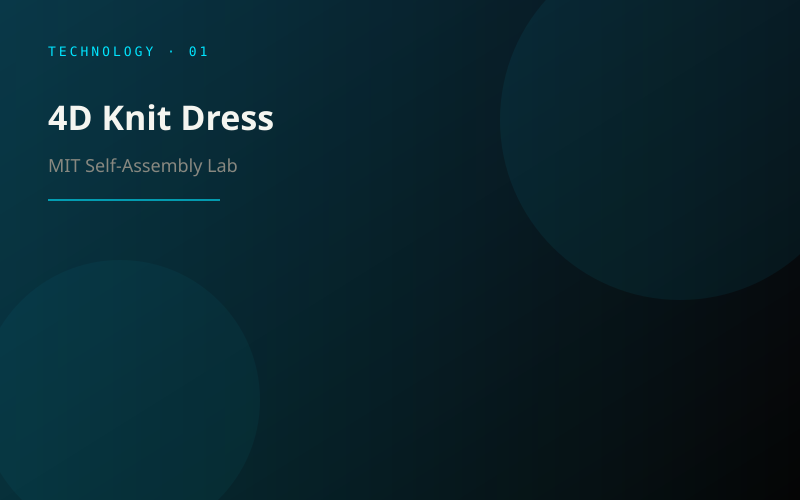
MIT Self-Assembly Lab
MIT Self-Assembly Labによる「4D Knit Dress」は、コンピュータ編機、熱で反応する糸、6軸ロボットを組み合わせた衣服の研究です。編地の中に熱活性糸を配置し、特定の場所へ熱を加えることで、編み上がった後から衣服の形状を変化させることができます。
一般的な製造では完成した瞬間に製品の形が確定しますが、この技術では「製造後の変化」まで含めて設計対象になります。
注目したいポイント：デザインする対象が「形」から、時間とともに形が変わる“振る舞い”へ拡張している。
02 · Magenta · Material
何を原料にし、製品が環境の中でどう振る舞うかまで設計する素材の事例群です。
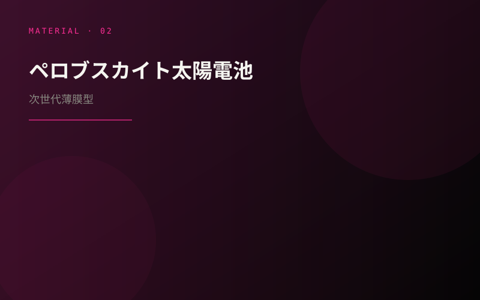
ペロブスカイト太陽電池は、日本発の次世代太陽電池技術として研究開発が進められている薄膜型の太陽電池です。従来のシリコン太陽電池と比較して薄く、軽量で、フィルム状にすることができ、塗布プロセスによる製造が可能という特徴があります。
柔軟性を持たせられるため、これまで太陽電池を設置しづらかった曲面や壁面、窓周辺、モビリティ、ウェアラブルデバイスなどへの応用可能性があります。
注目したいポイント：「太陽光パネルを置く」のではなく、製品や建築の表面そのものに発電機能を持たせられる可能性。
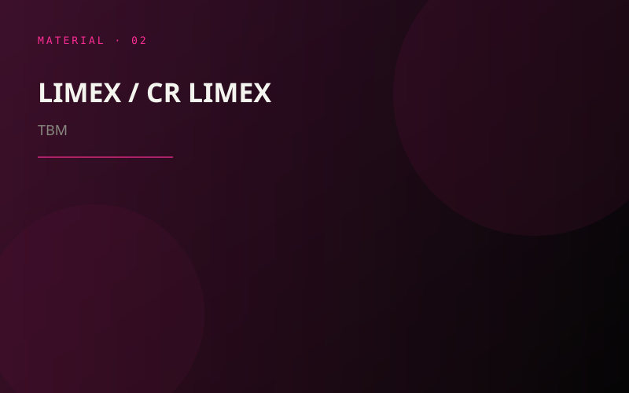
TBM
LIMEXは、炭酸カルシウムなどの無機物を50％以上含む、TBMが開発した複合素材です。石灰石を主原料とするLIMEXは、紙やプラスチックの代替用途などで展開されてきました。
さらに発展形として登場した「CR LIMEX」では、工場排ガス由来のCO₂とカルシウムを含む廃棄物などから合成した炭酸カルシウムを利用します。CO₂を回収して「原料」に変換し、射出成形可能な材料として製品の中に長期間固定するという考え方です。
注目したいポイント：廃棄物を再利用するだけでなく、これまで排出物だったCO₂そのものを「材料」に変えていくという発想。
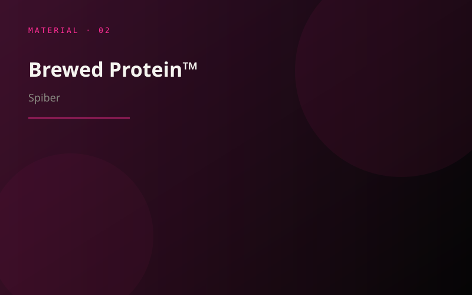
Spiber
山形県発のバイオベンチャーSpiberが開発する、微生物発酵によってつくられる人工タンパク質素材です。植物由来の糖などを原料とし、分子レベルで設計したタンパク質を微生物に発酵させることで生産します。
繊維として利用した場合、カシミヤ、ウール、シルクなどを想起させる特性を組み合わせられる可能性があり、ファッション分野を中心に実用化が進められています。繊維だけでなく、フィルムや樹脂などへ展開できる点も特徴です。
注目したいポイント：自然界から素材を「採取する」のではなく、欲しい性質を分子レベルで設計し、発酵によって素材を育てる。
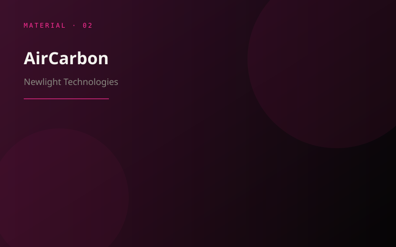
Newlight Technologies
AirCarbonは、Newlight Technologiesが開発するPHB系のバイオマテリアルです。微生物の働きを利用し、空気や温室効果ガスに含まれる炭素を材料へ変換するという特徴を持っています。
同社はAirCarbonを石油由来プラスチックの代替として、食品容器や製品などへ応用しています。また、同社は所定の評価方法に基づきAirCarbonをカーボンネガティブな材料として位置づけています。
注目したいポイント：「炭素を減らしながら製造する」のではなく、炭素を原料として製品の中へ取り込むこと自体を製造プロセスにする。
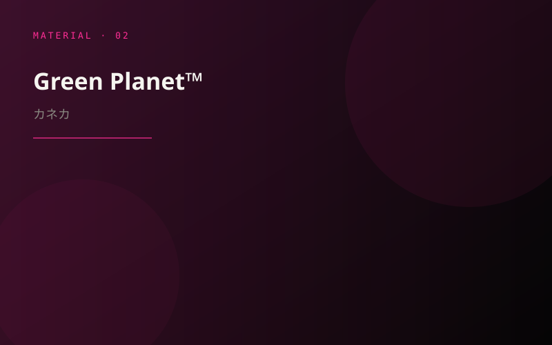
カネカ
Green Planet™は、植物油などのバイオマスを原料に、微生物による生合成によってつくられるポリマーです。土壌だけでなく海水中でも微生物によって生分解される性質を持ち、最終的にCO₂と水へ分解されます。ただし、分解速度は温度や微生物などの環境条件によって異なります。
ストローや包装材、食品容器など、一般的なプラスチックが使用されてきた領域への実装が進められています。
注目したいポイント：「リサイクルできるか」だけではなく、製品が環境へ流出した後にどう振る舞うかまで素材設計に含めるという考え方。
03 · Yellow · Design
技術や素材の特性を起点に、プロダクト・循環・表現の前提そのものを組み替える事例群です。
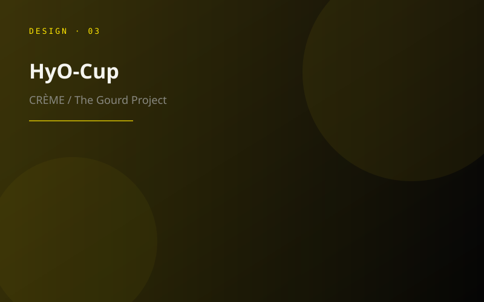
CRÈME
CRÈMEによるHyO-Cupは、瓢箪を材料として加工するのではなく、瓢箪が育つ過程そのものを製造工程として利用するプロジェクトです。
3Dプリントによって制作した型の中で瓢箪を育てることで、成長する植物にカップや容器の形を与えます。乾燥後には植物そのものが完成したプロダクトになるため、最終製品には人工的な材料をほとんど必要としません。
デザインとして面白いところ：3Dプリンタで「製品」を出力するのではなく、生物が成長するための“条件”を3Dプリントするという逆転した発想。
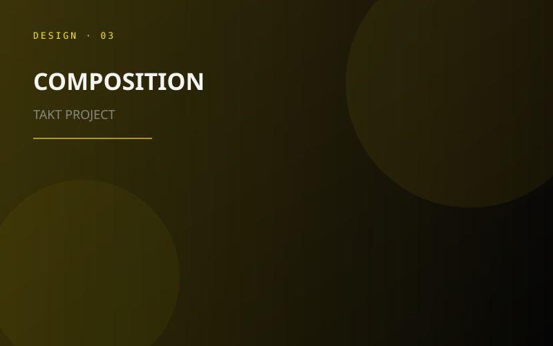
TAKT PROJECT
TAKT PROJECTの「COMPOSITION」は、電子部品と樹脂を別々のものとして扱うのではなく、電子部品そのものを素材の一部として捉え直したプロジェクトです。
電子部品や導電体を透明樹脂の内部へ配置し、そのまま封入することで、一見すると通常の基板や配線が存在しないように見えながら、内部では回路が成立し、照明などの製品として実際に機能します。
デザインとして面白いところ：「機構をケースで隠す」のではなく、回路・部品・外装材を一つの複合素材としてデザインすることで、プロダクトと素材の境界そのものを曖昧にしている。
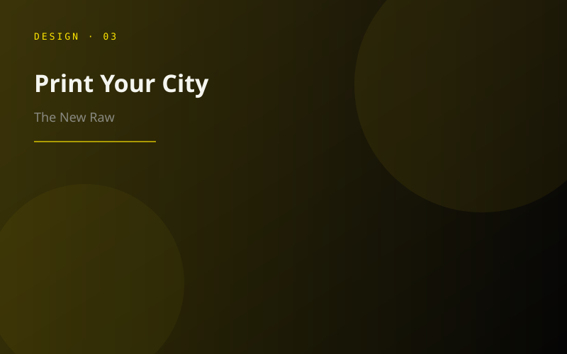
The New Raw
The New Rawの「Print Your City」は、都市から排出されるプラスチック廃棄物を地域内で回収し、大型ロボット3Dプリンタによってベンチやプランターなどの公共家具へ変換するプロジェクトです。
単に再生プラスチックを材料として使うだけではありません。市民が家具の形や機能を選択し、地域から出た廃棄物を地域の公共空間へ戻していく仕組みまで含めてデザインされています。
デザインとして面白いところ：廃材を「材料」にするだけでなく、廃棄→材料化→デザイン→製造→地域で使用、という循環全体をデザインしている。
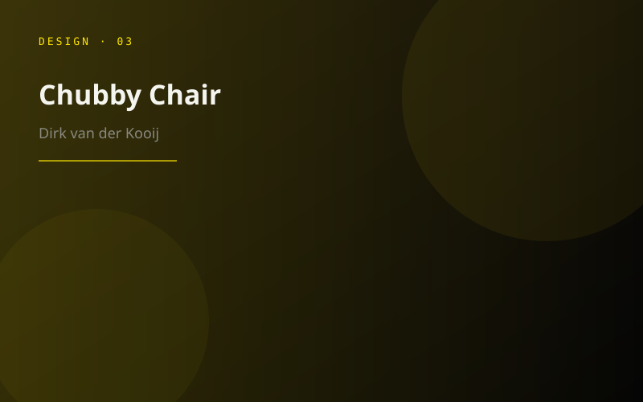
Dirk van der Kooij
オランダのデザイナーDirk van der Kooijは、自ら開発したプラスチック押出ロボットを用いて、再生プラスチックから家具を制作しています。年間30トン以上の廃プラスチックを新たな製品へ変換しており、積層跡や素材の揺らぎを隠すのではなく、プロダクトの表情として積極的に残しています。
代表的なChubby Chairも、ロボットによる低解像度の3Dプリントという製造条件から特徴的な造形が生まれています。
デザインとして面白いところ：完成形を先に考えて機械を使うのではなく、機械や材料の癖を観察し、その制約から形を発見していく「process-first」のデザイン。
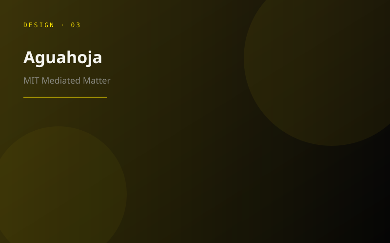
MIT Mediated Matter / Neri Oxman
「Aguahoja」は、セルロース、キトサン、ペクチン、炭酸カルシウムなど自然界に存在する材料を組み合わせ、ロボットによって積層してつくられた構造体の研究です。
特徴的なのは、一つの材料を均一に使うのではなく、場所ごとに材料の配合を変えることで、硬さ、柔軟性、透明度などを連続的に変化させていることです。さらに湿度や温度など周囲の環境に反応して変化する性質も、デザインの一部として扱われています。
デザインとして面白いところ：部品を組み合わせて機能をつくるのではなく、一つの物体の内部で「素材の配合そのもの」をデザインし、必要な性能を連続的に生み出す。
Lesson Builder
道具 → 表現 → 発見の順で答え、最後に「この授業の疑問」をはっきりさせます。
Presentation Formats
未来構想デザインコース等での研究交流会の概略です。 締切・提出先・会場手順は毎年更新されます。最新の日程・URLは担当教員・学年世話役・コース案内で確認してください。
Slide Library
Google スライドの資料です。タイトルから開きます（権限のあるアカウントで閲覧）。
上で授業を組み立て、その下に中間・最終発表とスライド資料を並べています。入力はこのブラウザにだけ下書き保存されます。